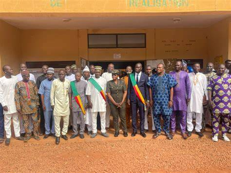

Maire · Mandature 2026–2033
Servir Kouandé avec intégrité, bâtir son avenir avec vision — pour chaque habitant de l'Atacora.
Natif de la région de l'Atacora, Bienvenu Sabi Dan a grandi dans ce paysage montagneux qui forge le caractère des hommes qui s'y enracinent. Diplômé de l'ENEAM (École Nationale d'Économie Appliquée et de Management) avec une maîtrise en gestion, il a construit une expertise solide au croisement de l'administration publique et du développement local.
Responsable des producteurs de coton de Kouandé pendant de longues années, il a appris à écouter les besoins des agriculteurs, des commerçants, des familles — avant de s'engager dans la gouvernance locale en tant que Premier Adjoint au Maire. Cette expérience de terrain lui a forgé une lecture précise des réalités de la commune.
Désigné Maire de Kouandé en février 2026, membre de l'Union Progressiste Le Renouveau (UPR), il porte une ambition claire : faire de Kouandé une commune modèle en matière de gouvernance participative, de développement agricole et d'infrastructures de proximité.
« Kouandé regorge de potentiels inexploités. Mon mandat sera celui du concret, du visible, du ressenti par chaque famille. »
— Bienvenu Sabi DanDe la salle de classe aux champs de coton, de la mairie à la direction d'une commune entière — chaque étape a préparé cet homme au service.
Sept axes prioritaires pour transformer la commune, améliorer le quotidien des habitants et préparer les prochaines générations.
Depuis sa prise de fonction, le Maire Sabi Dan a engagé sans délai des chantiers tangibles qui transforment le visage de Kouandé.
Images d'un engagement quotidien au cœur de la commune.

Pour toute démarche administrative, partenariat ou initiative citoyenne.
Envoyer un message à la mairie